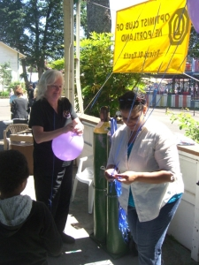
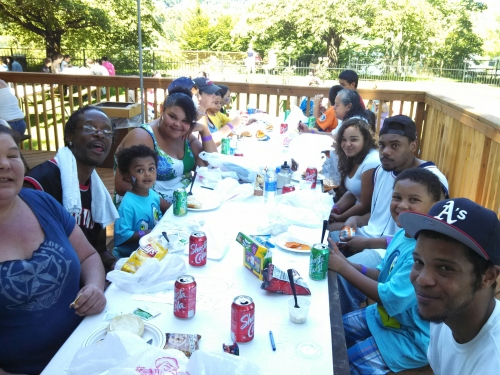

Do you know a child that has cancer? Are they getting
support from outside the hospital? If they live in Oregon or
SW Washington, they are most likely getting support from Candlelighters.
Join us in supporting the “Candlelighters For Children With Cancer” for a
day filled with fun family memories, face painting, great food, midway and roller-skating.
Start your day at Oaks Park in Area 11 for a great hamburger or hotdog lunch from 11 a.m.
until 1 p.m. Enjoy a beautiful view of the Willamette River with no doctors or nurses in sight.
Follow that up with all the midway rides and roller-skating you can handle until the park closes.
Proceeds of this event go to support Candlelighters and the Optimist Club of NE Portland.
Donations are tax deductible, so make your checks payable to “Optimist Club of NE Portland”.
Pre-registration required by June 19th, 2016 - Tickets are not for sale on day of event.
Contact us at +1 503-241-7202 or info@optimistkidsday.org for more information.

Have to have enough balloons for everyone!

Families far and wide enjoy their time at Oaks Park!